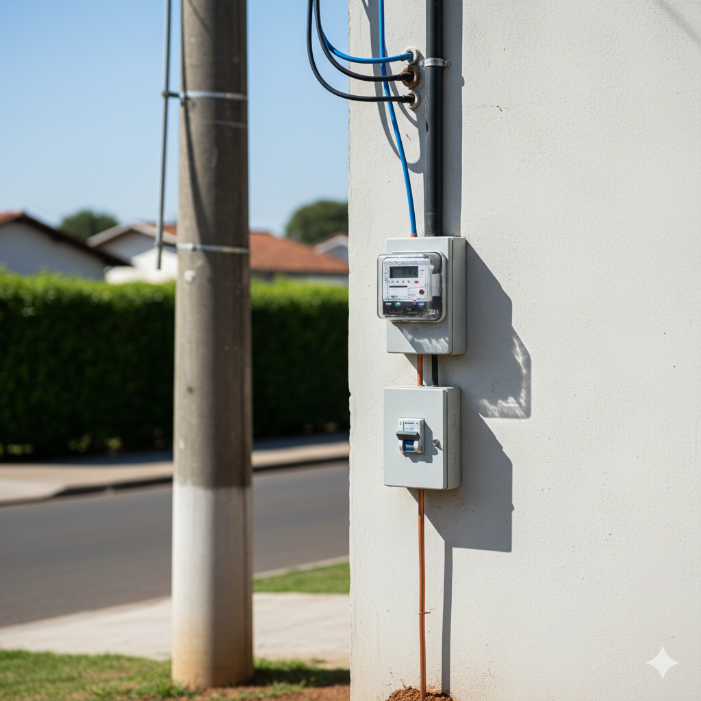

Guia em Instalações Elétricas Residenciais | Aula 11
Geração, Transmissão e Distribuição de Energia
Você já parou para pensar de onde vem a energia que acende a luz da sua sala? Ela percorre milhares de quilômetros através de um sistema complexo e interconectado. No Brasil, esse sistema é um dos maiores do mundo.
A matriz elétrica brasileira é majoritariamente renovável. A maior parte da nossa energia vem da força das águas (hidrelétricas), mas temos crescido muito em energia eólica e solar.
Nas usinas, a energia é gerada em tensões relativamente baixas (entre 13kV e 25kV). Para ser transportada com eficiência, ela precisa passar imediatamente por transformadores "elevadores".
Após ser gerada, a energia precisa viajar por longas distâncias. Para evitar perdas severas de energia por calor (Efeito Joule), a tensão é elevada para níveis altíssimos.
| Nível de Tensão | Classificação | Utilização |
|---|---|---|
| 69kV até 138kV | Alta Tensão | Subtransmissão, alimentando grandes indústrias e subestações urbanas. |
| 230kV, 440kV, 500kV ou 750kV | Extra-Alta Tensão | Linhas de transmissão de longa distância (grandes torres de ferro). |
Pelas leis físicas, quanto maior a tensão (Volts), menor a corrente (Ampères) necessária para entregar a mesma potência total. Menos corrente circulando significa que podemos usar cabos condutores muito mais leves e finos, reduzindo drasticamente as perdas de calor por Efeito Joule ao longo do percurso.
A Distribuidora (como Enel, Light, Copel, CPFL, Equatorial, etc.) é quem recebe a energia de alta potência das transmissoras em subestações de abaixamento e a conduz até as calçadas residenciais.
Esta é uma das dúvidas mais clássicas em eletricidade! A energia chega ao transformador da sua rua por meio de 3 condutores (Sistema Trifásico de Média Tensão sem neutro). O transformador realiza internamente um fechamento de bobinas chamado ligação Estrela (Y), originando o neutro localmente.
O condutor Neutro não vem da usina geradora; ele é criado no fechamento das bobinas secundárias do transformador de distribuição pública.
Ligação em Triângulo (Δ) - 3 Fios
Ligação em Estrela (Y) - 4 Fios
O **Padrão de Entrada** (composto por caixa de medição, eletrodutos e disjuntor de proteção) é a fronteira legal onde a rede da distribuidora pública se conecta eletricamente aos circuitos internos do imóvel.

Esquema típico de um Padrão de Entrada: Conexão regulamentada entre a concessionária e a planta do imóvel.
O padrão de fornecimento elétrico é dimensionado com base no cálculo de demanda de potência de todos os equipamentos previstos para a instalação:
* Nota: Os valores de tensão nominal (Ex: 127/220V ou 220/380V) e as faixas exatas de corte em kW flutuam dependendo do regulamento técnico da concessionária do seu estado (Normas RIC/NTD).
O condutor de Proteção (Terra) não é fornecido pela concessionária de rua! Ele deve ser estruturado e construído localmente dentro do imóvel por meio de hastes metálicas adequadas cravadas no solo (conforme o subsistema de aterramento adotado) e distribuído para toda a casa a partir do quadro principal.
Para resguardar a integridade física do eletricista e agilizar manutenções, a norma **NBR 5410** fixa cores obrigatórias para a isolação externa dos fios elétricos residenciais:
| Função do Cabo | Cor Obrigatória da Isolação | Descrição Técnica Regulamentar |
|---|---|---|
| Neutro | AZUL CLARO | Condutor de retorno que provém do centro da estrela do transformador. |
| Proteção (Terra) | VERDE ou VERDE-AMARELO | Condutor de segurança interligado às hastes locais para escoamento de falhas. |
| Fase | PRETO, VERMELHO ou MARROM | Qualquer cor sólida distinta, sendo expressamente proibido usar azul ou verde. |
A partir dos bornes de saída do medidor da concessionária, os fios avançam pelo Ramal de Entrada até adentrarem o **Quadro de Distribuição Principal (QD)** localizado no interior da casa. Será dentro deste QD que a energia se ramificará com segurança para alimentar cada circuito interno visto nas aulas anteriores.
Resposta: Para mitigar de forma drástica as perdas energéticas. Ao elevarmos a tensão a níveis extremos nas linhas, conseguimos despachar a mesma quantidade de potência trabalhando com uma corrente elétrica (Ampères) proporcionalmente minúscula. Corrente reduzida significa muito menos dissipação térmica por Efeito Joule nos condutores e possibilita a especificação de cabos suspensos muito mais leves e econômicos para vencer vãos de milhares de quilômetros.
Resposta: O condutor neutro tem sua gênese estruturada diretamente no centro geométrico da ligação tipo "Estrela" (Y) executada nas bobinas secundárias do transformador fixado no poste urbano. Como esse nó central comum onde as três fases se tocam é solidamente fixado à terra por hastes metálicas, ele assume o papel de referencial nulo estável do circuito, fornecendo a via de retorno de 0 Volts.